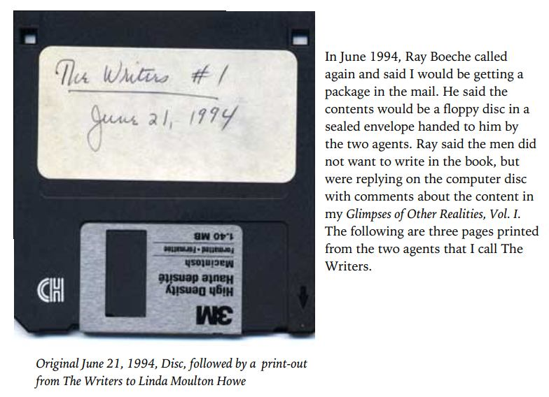
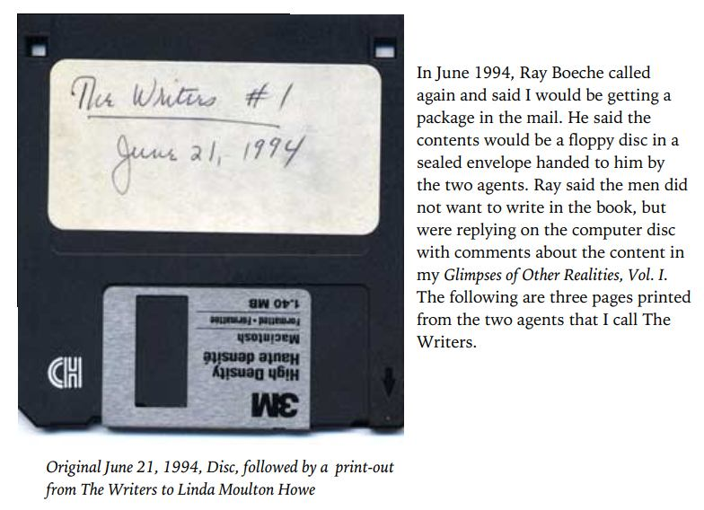

Pentagon Scientists showed Ray Boeche photos of "the state of the bodies of three people who died during an experiment in mental communication with ET" → I solved the mystery of this photo.
 

(image source: https://www.academia.edu/attachments/64424972/download_file?s=portfolio )
Original title: The information from the DoD scientists on which Nick Redfern and Jacques Vallee rely is a distraction.
History
(2021-02-20) Addition (2020-06-30) Addition (2020-05-30) Addition (2020-05-28) CreatedPreface
- This matter is currently under investigation, so it has not reached the level where a completed article can be written. However, if I aim for its completion, there is no prospect that it will be finished anytime soon. Therefore, I have decided to include the following article as a memo of the progress of the investigation, even though it is at an incomplete level and may contain unclear meanings. - This article is a continuation of a previous article below, http://news21c.blog.fc2.com/blog-entry-16018.html - In the following, I will concentrate on the case of: "Pentagon team dies of mysterious cranial cavity during channeling experiment with ET". (2020-02-28) (Japanese)Conclusion
- The story told by the Pentagon scientists and the photographs shown are all almost certainly fabrications. In other words, both the photos and the description of the circumstances of the deaths(as bellow) were definitely faked.- Ray Boeche was told from two Department of Defense scientists. Ray Boeche has verified the identities of both men. - Three people who had been communicating psychically with ET died. He were shown photographs of their deaths. The photos showed the three people sitting in a chair (*1) like a dentist's. The chair was flanked by equipment. - One had suffered a heart attack, and the other's skull had been crushed internally, as if under pressure from the outside. The depression in the skull was two inches in diameter. ... - The specific circumstances under which the three member died during the interactive experiments were: heart attack, asphyxiation, and skull entrapment. In 1991, Ray Boeche was shown photographs by a visiting Pentagon official. ref: "Pentagon team dies of mysterious cranial cavity during channeling experiment with ET". (2020-02-28) (Japanese)- Neither Nick Redfern nor Ray Boeche were aware of this fabrication. - Nick Redfern was not only unaware of the fabrication, but also became an unwitting collaborator in the Pentagon's UFO disinformation effort.Evidences for fabrication
… … … … (2020-05-28)
(The following was added on 2020-05-30) (2020-05-30 begin)Preface
- To explain the "evidence of fabrication" (if I try to do it properly), is still dull. Digestion of the accumulated articles will be greatly delayed. So, I will put it off for a while, or, if possible, hope that someone else will do it for me.I encourage you to solve this mystery.
- In fact, it is quite easy to understand that "all the stories told by Pentagon scientists and the pictures they showed are almost certainly fabrications." - No research or prior knowledge is required. No need to search the web. No need to watch videos. The description quoted in the conclusion above is all the information you need. - In most cases, it is impossible to show that a photo is faked unless you have seen the photo. However, in this case, it is not even necessary to have seen the photo. A junior high school student's level of general knowledge would suffice. - Furthermore, the photo in question is not even a reproduction (created for later commentary). In other words, the original incident itself, which was to be recreated and photographed, never occurred in the first place. It is impossible to show this at the junior high school level, but the knowledge of an ordinary member of society is sufficient. - Therefore, if you are a UFO enthusiast, I suggest that you find some concrete evidence that the photo in question cannot be real. It is rare to find such a simple and straightforward case. I can assure you that it is good training to spot a fabrication. (Though it's too easy for those with good instincts to train themselves.) (2020-05-30 end)
(2020-06-30 begin)Preface
- It has been a month since the last article. No one seems to be interested in this matter, but in the midst of a pandemic, it is rather healthy and desirable not to be interested in such a crazy topic. - I'll finish explaining the "fake evidence" before I forget. The details will come later.Proof that the photos are faked
- First, I will restate the portion of the article that refers to the photographs in question.- Ray Boeche was told from two Department of Defense scientists. Ray Boeche has verified the identities of both men. - Three people who had been communicating psychically with ET died. He were shown photographs of their deaths. The photos showed the three people sitting in a chair (*1) like a dentist's. The chair was flanked by equipment. - One had suffered a heart attack, and the other's skull had been crushed internally, as if under pressure from the outside. The depression in the skull was two inches in diameter. ... - The specific circumstances under which the three member died during the interactive experiments were: heart attack, asphyxiation, and skull entrapment. In 1991, Ray Boeche was shown photographs by a visiting Pentagon official. ref: "Pentagon team dies of mysterious cranial cavity during channeling experiment with ET". (2020-02-28) (Japanese)- The Pentagon scientists said the three victims died of skull entrapment, heart attack, and asphyxiation, and showed pictures of the conditions under which they died while sitting in reclining chairs... This is the core of the fabricated evidence. - If someone suffers a heart attack or suffocation during an experiment, it is common practice to immediately remove them from their reclining chair to the floor and administer first aid and lifesaving measures. Large organizations everywhere conduct regular life-saving drills to prepare for such an emergency response. That is, cardiac massage and artificial respiration until an ambulance arrives. The Pentagon is supposed to have AEDs for electroshock installed in various locations, so they rush to bring them out and use them to save the victim's life. - If someone is stupid enough to leisurely take pictures of the damage while a heart attack or asphyxiation victim is in a reclining chair, he or she will be severely reprimanded. Even if (and only because) the victim has already stopped breathing and beating, life-saving measures must be given top priority. - If they fail to provide the necessary lifesaving care, the supervisor of the department and the head of the organization will be removed from office.It does not matter if it is a top-secret project or not. - And if there are three fatalities at the same time, it is futile to insist that the life-saving procedures were flawless. These photos blatantly and completely disproves that claim. - Therefore, these photos cannot be authentic. They are completely fabricated photographs.There is almost no possibility that the still image was cut from a video recording.
… … …There is no possibility of a reproduction photo to illustrate the situation.
… … …Why did DoD scientists fabricate photos and stories?
… … … (2020-06-30 end)
(2021-02-20 begin)Preface
- I added an audio transcription (auto-generated) of the portion where Nick Redfern talks about this in detail.Transcription (auto-generated)
▼Click to expand
host: so back to the to DoD 21:48 physicists and rabo Shay that you they 21:51 continued their experimentation 21:54 contacting the NA cheese and on human 21:56 entities is what they originally called 21:58 him believing they were going to be 22:00 speaking with extraterrestrials but then 22:02 it turned out in their opinion that they 22:04 were talking to demons instead and 22:07 during these experience experiments 22:09 there were deaths that were involved you 22:13 know with the people that 22:14 we're doing the experimentation do you 22:15 have any details on how they died or 22:18 what experiments they were doing when 22:20 they died? ----- Nick Redfern: oh yeah I mean rate actually 22:23 openly told me that when he met these 22:24 two DoD guys they brought a briefcase 22:26 with them and opened it and showed him a 22:29 number of photographs of people who had 22:31 died in these experiments and as I said 22:34 basically the idea of the contact was to 22:38 sort of use my apparent psychic powers 22:40 and altered states to sort of project a 22:42 thought out to these entities and then 22:45 have almost like a psychic conversation 22:47 it wasn't like the graves were 22:49 materializing in the Pentagon or 22:51 anything like that but the the 22:54 photographs ray told me all showed 22:57 different people sitting in what he 22:58 describes look like dentist's chairs and 23:01 he said that the the photographs all 23:05 showed dead people sitting in these 23:07 dentists like chairs and one was a man 23:10 who supposedly died suddenly of a heart 23:12 attack in the middle of these 23:13 experiments another one died in a weird 23:18 fashion through suffocation where they 23:20 could never determine how the person had 23:22 suffocated it was almost like you know 23:24 like an invisible hand gripped around 23:26 the throat and strangled and suffocated 23:28 in that way and the weirdest one of all 23:30 was where somebody at literally their 23:33 head it sort of caved in on one side as 23:37 if it had been sort of smashed with like 23:39 a hammer you know somebody just hit you 23:41 on the side of the head really hard with 23:42 a hammer and it was like a crushing 23:43 effect to the skull and this all 23:47 occurred during the course of these 23:49 experiments and of course this was sort 23:51 of gain perceived as like a like a 23:53 psychic backlash that they were trying 23:55 to put a thought out there to contact 23:58 these things and next thing that the 24:00 people involved are just dying left 24:02 right and center and and again that's 24:04 what led the the people on the program 24:07 to think well hang on a minute if we're 24:09 just dealing with nuts and bolts aliens 24:11 why is this happening and again that was 24:15 perceived as part of this whole sort of 24:17 black cloud coming over the the project 24:19 and of course in like people outside of 24:22 the Pentagon 24:24 you know just members of the public who 24:25 dabble in a lot of these sort of stuff 24:27 it was like well now we've opened the 24:29 door how do we close it and that was a 24:31 big problem again you knows what have we 24:33 done you know what have we unleashed ----- host: so 24:35 they actually took photographs and 24:38 documented the deaths of these three men 24:40 I'm assuming they were men ----- Nick: no two women 24:43 I think one was a woman ----- host: but they 24:46 photograph their dead bodies in the 24:47 chair where they died at the point of 24:50 the experiment ----- Nick: yeah right absolutely I 24:53 mean ray told me on the record but he 24:56 saw the photographs he said that they 24:58 took me photographs out of this 24:59 briefcase and showed them to him and he 25:02 saw the dead bodies sitting in these 25:05 sort of dentists type chair type things 25:08 now ray said he had no idea and he 25:11 wasn't told where the pictures were 25:13 taken or exactly when you know it could 25:15 have been this was 91 when Ray had the 25:17 first meeting with them so it could have 25:20 in the 80s it could have in the 70s we 25:22 really don't know and he didn't know but 25:24 they said you know you could tell that 25:27 they didn't look like staged photographs 25:29 or anything like that you know to try 25:31 and deceive him or whatever it was some 25:33 sort of weird you know mind based 25:35 experiments that they were trying to 25:37 play on ray he said he looked you know 25:39 just like the real things ----- host: well so now 25:42 the the one that died with the sunken 25:46 skull yeah 25:47 was there any trauma to the skull as far 25:51 as abrasions or blood spatter or 25:55 bleeding or was it just caved in ----- Nick: well I 25:59 don't know about the blood blood aspect 26:02 of it is although bruising but I do know 26:04 that they said that the cause was like 26:06 blunt force trauma to the head 26:09 but that I truly don't know anything 26:12 I've got a blood angle or the bruising 26:14 and Ray never mentioned that but 26:15 apparently the piece of the blunt force 26:17 trauma was something that was mentioned 26:19 in the I guess like the documentation 26:22 and the paperwork that surrounded 26:24 you know the analysis have had the 26:26 person died or why ----- host: that is just 26:29 absolutely insane it's insane do you 26:32 know if they were Tate if the experiment 26:35 these three people that did the 26:37 experiment if they were using illicit 26:38 drugs to try to attempt to make this 26:40 contact or 26:41 where they sober and just tuning in were 26:44 they suspected to be psychics of in any 26:47 shape way or form ----- Nick: well we don't really 26:50 know all the details but I mean they 26:52 would have to have some psychic 26:54 abilities because the whole point of the 26:56 program was to try and contact me the 26:58 nhe psychically I think they might use 27:01 utilized their powers now one of the 27:05 theories of course is that maybe the 27:07 powers that they were trying to 27:08 understand and militarize who actually 27:10 used again to that you know that was the 27:13 whole point one of the one of the key 27:15 issues of the program was whether or not 27:17 sort of a psychic powers that these 27:20 creatures possessed could be used the 27:22 sort of Calif like firing ranges you 27:24 know you could cause for example like a 27:27 foreign leader to have a sudden heart 27:29 attack or a brain hemorrhage and you 27:31 would just people would just think it 27:32 was down to natural causes but it could 27:34 actually be caused psychically and so I 27:37 think that's what they were looking into 27:39 you know trying to harness these 27:41 technologies or these paranormal powers 27:44 for for using things like assassination 27:47 and things like that 27:49 but it may be that the tables were 27:51 turned and the very powers that were 27:53 going to be used you know like on an 27:54 enemy leader or whatever we actually 27:57 used on the people in the project so in 27:59 other words I think they must have had 28:00 the ones who died must have had some 28:02 sort of psychic connection or psychic 28:05 skills because clearly they were 28:07 probably chosen you know to take part in 28:09 the project for that reasonVideo
(2021-02-20 end)
Thanks
- Translated with www.DeepL.com/Translator (free version)
(2022-06-26 : translation)
First published article (Japanese)
Nick Redfern や Jacques Vallee が頼っている国防総省科学者からの情報は撹乱工作。（2）（＋追加3） (2021-02-20)
Degree of completion of this article: